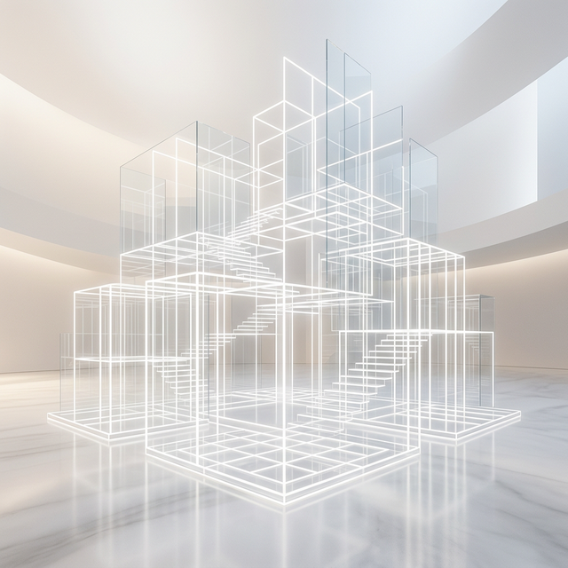

探索 Vue.js
的無限可能
第一堂課：從基礎環境到框架思維。我們將帶領你跨出網頁開發的第一步，揭開現代前端開發的神秘面紗。
什麼叫 Node.js？
想像一下，Node.js 就如同一台大型卡車。它的工作就是幫你把世界各地開發好的「程式套件」載運到你的電腦裡。
只要下一行指令，卡車就會幫你處理好一切。這就是所謂的 NPM (Node Package Manager)。
準備你的工具箱
要開始開發 Vue，我們必須先在電腦上安裝 Node.js。這就像是買一輛卡車，我們才能開始載貨。
打開你的工作坊：
工作環境建置
我們會使用像 Antigravity 這樣強大的 AI 編輯器。它能理解你的邏輯，協助你快速排除 Bug，並提供即時的代碼建議。
極速物流工人：VITE
Vite 是幫你整理現場的「極速工人」。當你開發時，他會立刻把分散的程式碼碎片打包，並瞬間呈現在你面前。
傳統工具 (Webpack)
每次啟動都要先處理整座山的代碼，等到天荒地老...
現代標竿 (Vite)
採用 ESM 原生加載，「你要什麼他才搬什麼」，啟動只需不到 1 秒。
為什麼工程師需要 Vue？
曾經我們像在工廠「手工打造」每一顆按鈕。但在大型專案中，我們需要更高層次的抽象（Abstraction）。
指令式開發 (Imperative)
你需要精確告訴 JS：抓 ID、綁 Listener、改文本、改樣式。代碼與 UI 高度耦合（Tight Coupling），改一個地方整組壞光光。
宣告式與響應式 (Declarative)
你只需定義 **「狀態 (State)」**。Vue 會根據狀態自動映射出 UI。這種 **「響應式數據綁定」** 讓工程師只需專注於數據邏輯，繁瑣的 DOM 更新交由框架處理。

Vue 的版本進階：2 vs 3
我們正站在技術的浪潮之巔。
Vue 2 (Legacy)
已停止維護老派的 Options API。主要痛點在於邏輯難以複用（Mixins 難維護）且對 TS 支持有限。
Vue 3 (Current)
最新標準引進了 **Composition API**（類似 React Hooks）。代碼可以根據 **功能模組** 拆分，實現高度的可複用性（Reusability）與強大的 TS 支持。
兩個開發風格的較量
<script> export default { data() { return { count: 0 } }, methods: { increment() { this.count++; } } } </script>
<script setup> import { ref } from 'vue'; const count = ref(0); function increment() { count.value++; } </script>
啟動你的第一個專案
打開終端機，呼叫我們的大型卡車幫我們搭建 Vue 的地基：
✔ Project name: my-vue-project
✔ Add TypeScript? ... No
✔ Add Vue Router ... No
... (一路按 Enter 即可)
掛載並運行
地基蓋好後，進入資料夾並安裝「簽收單 (package.json)」上的所有零件：
Server Running!
你的專案已在 Vite 的守護下順利啟動。
專案架構圖
代碼的核心，這就是你的戰場。
專案的根組件（Root Component）。
專案身分證與依賴列表。
組件的解剖學 (SFC)
Vue 最核心的發明：單檔案組件。將一切邏輯封裝在一個零件裡。
<template>
HTML 骨架
定義結構與數據綁定。
點擊查看範例
<script>
JS 大腦與狀態
定義變數、方法與計算屬性。
點擊查看範例
<style>
CSS 樣式
這裡可以設定 Scoped 封裝樣式。
點擊查看範例
掌握了地基，下一步就是起飛
你已經建立好了現代網頁開發的知識體系。
Node, NPM, Vite 就位。
掌握 Template 互動語法。
Ref, Computed 深化。